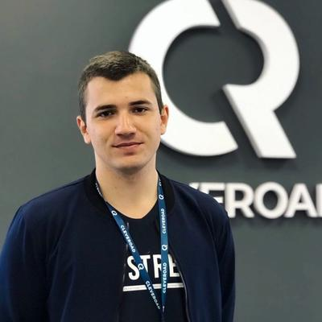

Contacts:
Skills:
- Producing web and mobile testing
- API testing(Postman, swagger, JMeter), creating and maintaining collections, asserts
- Logs analysis
- Expirienced in microservice\monolithic
- Analysis of business/functional requirements
- Creation and maintain testing documentation
- Release management
- Task management
DEVELOPED PROJECTS
- Fuzu(WEB)
- Responsibilities
- Producing web testing, requirements analysis , close communication
and collaboration with developers, close communication with customer support team,
communication with B2B clients, release management
- Challenges
-
Build QA process for outstaff project
- CarU(web)
- Responsibilities
- Project was in the maintenance phase, so my main duties were: Testing and deploying
new
features, creating full test documentation(project did not have it), team
coordination.
- Challenges
-
Project investigation and keeping high quality level without specification
- Hakaya(iOS)
- Responsibilities
- Supporting of main QA, testing opened tickets, discussion requirements for new
features
with BA\PM
- TalentQuest(mobile, flutter + web)
- Responsibilities
- Be QA engineer from the first state of SDLC. Requirements analysis, creation and
maintaining testing documentation, Producing api \ web \ mobile testing, full
coordination